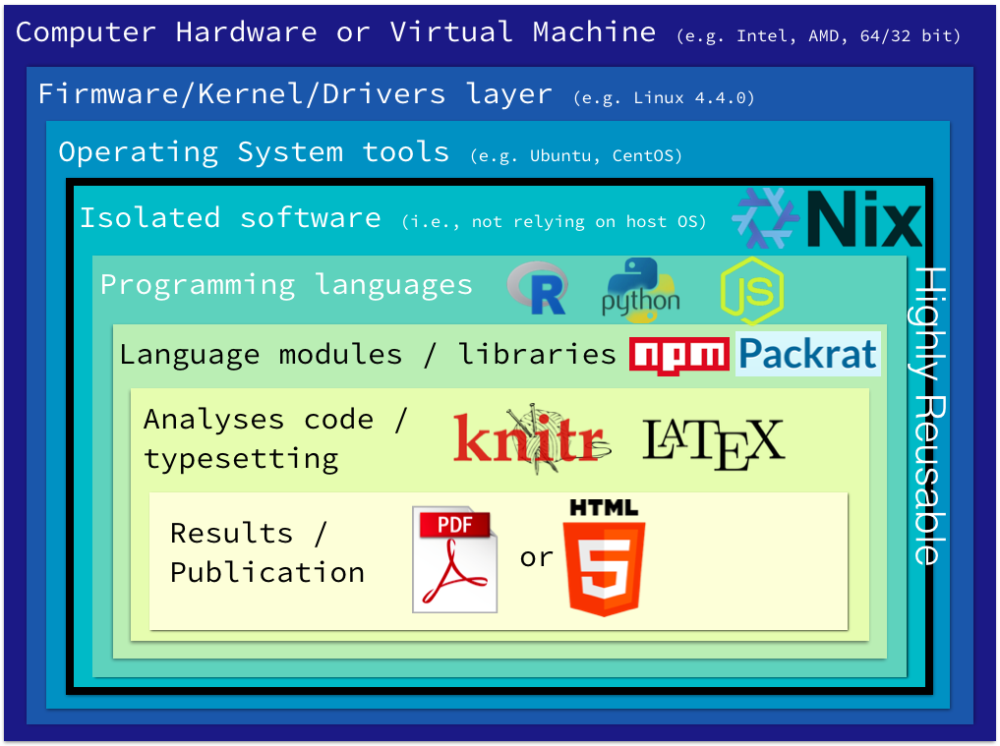

A truly reproducible scientific paper
Format
This exercise works well as an in-person workshop or an online exercise. It can be done individually or in a group.
Materials
- Computer with a *NIX terminal, i.e., Linux, Mac or latest Windows 10 Insiders Preview (bash).
- Collaborative document editor like Etherpad or Google Docs
Introduction
Reproducibility is a corner stone of the scientific method, yet it is many times hard to achieve. In addition, the lack of reusability of many scientific papers hinders the speed of research. These issues are not exclusive to science, but also affect any data analysis domain. For a more detailed introduction, please check the blog post "A truly reproducible scientific paper?".
Here we describe one possible practical approach to try to solve these issues.
Steps to Complete
-
Background
Participants should have a basic knowledge on how to use a UNIX command line interface. Check this tutorial
-
Install and use Nix
Make sure you linux distribution has at least
sudo,git,curl, andbzip2installed. Then, run the following command:curl https://nixos.org/nix/install | shThis script will download a distribution-independent binary tarball containing Nix and its dependencies, and unpack it in /nix.
To load the Nix environment variables and start using it, do this:
. ~/.nix-profile/etc/profile.d/nix.sh -
Basic Nix usage
For more information, read the manual.
# Search a package nix-env -qaP .*texlive.* # Install a package nix-env -i R # Check which R you're using which R ## /home/user/.nix-profile/bin/R readlink $(which R) ## /nix/store/xan5sz2xr9y5ys76l1lifav97fqqf3rd-R-3.2.4-wrapper/bin/R # Add a channel nix-channel --add https://nixos.org/channels/nixpkgs-unstable # Update packages descriptions (like apt-get update) nix-channel --update # Upgrade all packages (like apt-get upgrade) nix-env -u -
What is a Nix package description
For more information, read the manual or check Nix by example
{ stdenv, fetchurl, mydependency, tar }: stdenv.mkDerivation { name = "mytool-2.1.1"; buildInputs = [ mydependency tar ]; builder = builtins.toFile "builder.sh" '' source $stdenv/setup PATH=$mydependency/bin:$tar/bin:$PATH tar xvfz $src; cd mytool-* ./configure --prefix=$out && make && make install ''; src = fetchurl { url = http://mytool.com/dist/tarballs/mytool-2.1.1.tar.gz; sha256 = "4d7aab632375d01d04dbfcb709527ccea71a4aee"; }; } -
How to setup an environment for a project
Create a
default.nixfile in your project root folder.with import <nixpkgs> {}; stdenv.mkDerivation rec { name = "env"; env = buildEnv { name = name; paths = buildInputs; }; buildInputs = [ R which # Required by Packrat texlive.combined.scheme-basic ]; }Then run
nix-shell -
Use Nix in a reproducible way (optional)
Two things need to be considered for reproducibility. One is snapshotting the packages descriptions that describe how the tools are compiled, installed, and their dependencies. The other is snapshotting the source code and binaries of the tools themselves once installed, just in case any external source that the packages descriptions rely on disappears. So for the packages descriptions, do:# Clone packages descriptions git repository git clone https://github.com/NixOS/nixpkgs.git # Install packages using repo instead of channels nix-env -i R -f nixpkgs # Setup a Nix environment using repo instead of channels nix-shell -I nixpkgs=./nixpkgs . --command 'R'Then for the source code and binaries, just keep a backup copy of the
/nixfolder -
Manage R libraries with Packrat
For more information, visit Packrat's website
In bash:
nix-shell -I nixpkgs=./nixpkgs . --command 'R'In R:
install.packages('packrat') # Warning in install.packages("packrat") : # 'lib = "/nix/store/x0fia7s1k49wgzb67cck6rq9zgwssf06-R-3.2.4/lib/R/library"' is not writable # Would you like to use a personal library instead? (y/n) y library('packrat') packrat::init() install.packages("knitr") packrat::status() -
Write your paper
Create an
article.Rnwfile similar to the example below:\documentclass{article} \begin{document} \author{John Smith} \title{A truly reproducible scientific paper} \maketitle \abstract{Reproducibility is a corner stone of the scientific method, yet it is many times hard to achieve. In addition, the lack of reusability of many scientific papers hinders the speed of research. These issues are not exclusive to science, but also affect any data analysis domain. Here we describe one possible practical approach to try to solve these issues.} \section{Results} <<amazing-plot, fig.caption=caption>>= caption = "Amazing figure showing amazing results." library(ggplot2) ggplot(aes(x<-c(2,3,4,2), y<-c(3,3,4,5)) + geom_point() @ \end{document}In bash:
Rscript -e "source('.Rprofile'); library(knitr); knit('article.Rnw')" pdflatex main.tex -
Bonus: Put everything inside Docker
Check this blog post Building Docker containers from scratch using Nix for existing infrastructure.
-
Bonus: Global Node.JS modules
sudo npm install -g json export PATH=$(dirname $(readlink $(which node))):$PATH
Glossary
Nix
Functional package manager
LaTeX
Text typesetting language.
Packrat
Dependencies management and snapshotting for R
KnitR
An R tool to parse and render code embedded in a LaTeX file (works with other languages besides R)
Follow-up Resources & Materials
Credits & Attribution
The Leona M. and Harry B. Helmsley Charitable Trust, Mozilla Science Lab, and WurmLab